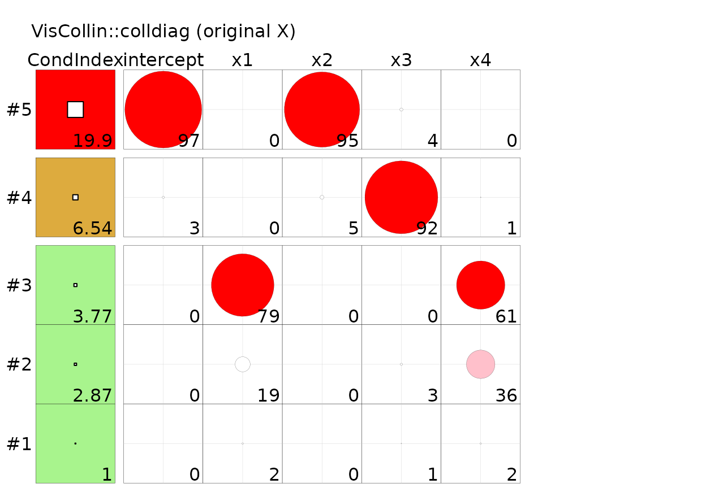
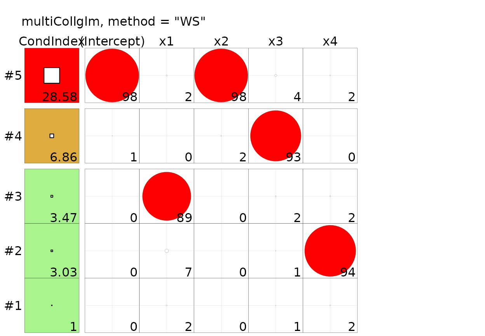

Comparison with VisCollin
Source:vignettes/articles/comparison-viscollin.Rmd
comparison-viscollin.RmdWhy this comparison
VisCollin (Friendly, n.d.)
is the reference R implementation of the Belsley-Kuh-Welsch collinearity
diagnostics (Belsley et al. 1980) and of
their graphical display (tableplots and collinearity biplots) proposed
by Friendly and Kwan (2009). It works on
lm and glm objects, so it is the natural point
of comparison for multiCollglm. This article answers three
questions on real data:
- What exactly does
VisCollin::colldiag()compute when it is given a GLM? - Does
multiCollglmreproduce it, and with which setting? - Where do the two give different answers, and why?
The short answers are: colldiag() decomposes the
original design matrix and ignores the family, the link
and the IRLS weights, which is exactly multiCollglm’s
method = "X"; the two coincide to machine precision there;
and they differ whenever the information matrix \(X'\hat W X\) is not proportional to
\(X'X\), which is the usual case in
a GLM.
library(multiCollglm)
library(VisCollin)
# TEMP of the Lee data is stored on a /100 scale; multiply it back by 100
lee <- LeeCancer
lee$x6100 <- lee$x6 * 100
mods <- list(
Lee = glm(y ~ x1 + x4 + x6100, family = binomial(), data = lee),
Nitrogen = glm(y ~ x1 + x2 + x3 + x4, family = Gamma(link = "inverse"),
data = Nitrogen),
Mine = glm(y ~ x1 + x2 + x3 + x4, family = poisson(), data = Mine),
Plastic = glm(Y ~ X1 + X2 + X3 + X4, family = poisson(), data = Plastic)
)What colldiag() does with a GLM
The relevant lines of colldiag() are (VisCollin
0.1.4):
X <- mod$model[, -1] # drop the response from the model frame
X <- na.omit(X)
if (add.intercept) X <- cbind(1, X) # default: FALSE
X <- scale(X, scale = scale, center = center)
svdX <- svd(X)So, for a glm, it takes the columns of the model
frame, optionally adds a column of ones, scales them (by
default, dividing each column by its root-mean-square, without
centering) and takes the SVD. The fitted model itself is never used: no
family, no link, no IRLS weights. Its defaults
(add.intercept = FALSE) reproduce SAS
PROC REG ... COLLINNOINT, following the argument of Fox
(1997) that diagnostics including the
intercept are only meaningful when it has a real interpretation.
Dividing by the root-mean-square instead of by the Euclidean norm multiplies every column by the same constant, \(\sqrt{n-1}\), so condition indices and variance proportions are the same as with unit-length columns.
Where they coincide: method = "X"
With add.intercept = TRUE, colldiag() and
bkw_diagnostics(method = "X") decompose the same matrix,
\(X_{ul}'X_{ul}\) (original design
matrix, unit length, intercept included, no weights). For the four
datasets of the package:
same <- sapply(mods, function(m) {
cd <- colldiag(m, add.intercept = TRUE)
bk <- bkw_diagnostics(m, method = "X")
c(
max_diff_condition_index = max(abs(cd$condindx[, 1] - bk$condition_index)),
# colldiag() stores components in rows; multiCollglm in columns
max_diff_proportions = max(abs(t(cd$pi) - bk$proportions))
)
})
t(same)
#> max_diff_condition_index max_diff_proportions
#> Lee 3.584546e-10 5.719730e-14
#> Nitrogen 1.833200e-11 1.301181e-13
#> Mine 8.171241e-14 3.996803e-15
#> Plastic 3.634796e-09 4.498291e-12The differences are floating-point noise: condition indices and
proportions agree to at least ten significant digits. The same holds for
the colldiag() default (no intercept) when the GLM is
fitted without intercept:
m_noint <- update(mods$Mine, . ~ . - 1)
c(colldiag = max(colldiag(m_noint)$condindx),
multiCollglm = condition_number(m_noint, method = "X")$condition_index)
#> colldiag multiCollglm
#> 6.402271 6.402271Hence the one-line translation table:
VisCollin |
multiCollglm |
|---|---|
colldiag(mod, add.intercept = TRUE) |
bkw_diagnostics(mod, method = "X") |
colldiag(mod) (no intercept, the
default) |
bkw_diagnostics(<mod fitted without intercept>, method = "X") |
colldiag(mod, center = TRUE) |
not available (centering is deliberately not offered) |
| largest condition index | condition_number(mod, method = "X")$condition_index |
Where they differ (1): the IRLS weights
In a GLM the precision of \(\hat\beta\) is governed by the information
matrix \(X'\hat W X\), not by \(X'X\). When the weights \(\hat W\) are not constant, the collinearity
of the regressors (what colldiag() measures) and
the conditioning of the information matrix (what the default
method = "WS" measures) are different things. For the same
models:
cn <- function(m) {
c(`VisCollin (colldiag)` = max(colldiag(m, add.intercept = TRUE)$condindx),
sapply(c(WS = "WS", MP = "MP", X = "X", RAW = "RAW"),
function(k) condition_number(m, method = k)$condition_index))
}
knitr::kable(t(sapply(mods, cn)), digits = 4,
caption = "sqrt(CN) on the same data; the VisCollin column equals method X.")| VisCollin (colldiag) | WS | MP | X | RAW | |
|---|---|---|---|---|---|
| Lee | 190.7765 | 315.1366 | 329.9542 | 190.7765 | 10808.133 |
| Nitrogen | 67.7053 | 77.9772 | 75.9081 | 67.7053 | 8790.650 |
| Mine | 19.8950 | 28.5822 | 26.4538 | 19.8950 | 2093.316 |
| Plastic | 595.7429 | 876.8393 | 899.0447 | 595.7429 | 73561.624 |
For these four applications the weighted definitions are
larger than the unweighted one (Lee: 190.78 with
colldiag(), 315.14 with "WS"; Plastic: 595.74
against 876.84), so a diagnostic that ignores the weights understates
the ill-conditioning of the estimation problem. In other applications
the difference may go the other way, or vanish; what matters is that it
cannot be known without computing the weighted version.
The same happens with the variance-decomposition proportions. For the
Lee model both approaches single out the intercept and TEMP
(x6100) in the largest dimension, but with the weights a
third dimension becomes problematic as well (sqrt(CN)
31.96, against 11.80 with colldiag()), and the proportions
of the other dimensions are distributed differently:
print(colldiag(mods$Lee, add.intercept = TRUE), fuzz = 0.3)
#> Condition
#> Index Variance Decomposition Proportions
#> intercept x1 x4 x6100
#> 1 1.000 . . . .
#> 2 5.448 . . 0.979 .
#> 3 11.799 . 0.969 . .
#> 4 190.776 0.999 . . 0.999
bkw <- bkw_diagnostics(mods$Lee) # method = "WS"
bkw
#> Collinearity diagnostics (Belsley-Kuh-Welsch) on (X'WX)_ul [method = "WS"]
#>
#> Eigenvalue Sing.value sqrt(CN)
#> dim1 3.903 1.976 1.000
#> dim2 0.093 0.305 6.488
#> dim3 0.004 0.062 31.958
#> dim4 0.000 0.006 315.137
#>
#> Variance-decomposition proportions (row = coefficient, column = component):
#> dim1 dim2 dim3 dim4
#> (Intercept) 0.000 0.000 0.005 0.995
#> x1 0.000 0.007 0.817 0.176
#> x4 0.003 0.457 0.095 0.444
#> x6100 0.000 0.000 0.003 0.997
#>
#> >> Possible collinearity problems (sqrt(CN) >= 10 and proportion >= 0.5 on >= 2 variables):
#> - dim4 (sqrt(CN) = 315.14): (Intercept), x6100When the weights are constant everything coincides
If \(\hat W\) is a multiple of the
identity, weighting does nothing and the three scaled definitions
collapse into the one of colldiag(). That is the case for a
Gaussian model with identity link (the linear model):
m_gauss <- glm(y ~ x1 + x2 + x3 + x4, family = gaussian(), data = Mine)
c(colldiag = max(colldiag(m_gauss, add.intercept = TRUE)$condindx),
sapply(c("WS", "MP", "X"),
function(k) condition_number(m_gauss, method = k)$condition_index))
#> colldiag WS MP X
#> 19.89504 19.89504 19.89504 19.89504and, less obviously, for a Gamma model with log link, whose IRLS weights are identically 1 (see the Bodyfat article):
data("bodyfat", package = "TH.data")
m_body <- glm(DEXfat ~ age + waistcirc + hipcirc + elbowbreadth + kneebreadth +
anthro3a + anthro3b + anthro3c + anthro4,
family = Gamma(link = "log"), data = bodyfat)
range(m_body$weights)
#> [1] 1 1
c(colldiag = max(colldiag(m_body, add.intercept = TRUE)$condindx),
sapply(c("WS", "MP", "X"),
function(k) condition_number(m_body, method = k)$condition_index))
#> colldiag WS MP X
#> 352.0413 352.0413 352.0413 352.0413Where they differ (2): the model frame
Because colldiag() reads mod$model[, -1],
what it analyses is whatever sits in the model frame, not the design
matrix the model was fitted with. Two consequences, both easy to hit in
a GLM:
Prior weights and offsets are treated as regressors.
A model fitted with weights = (very common for binomial or
Poisson-rate models) stores the weights in the model frame as a column
called (weights), which then enters the diagnostic as if it
were an explanatory variable:
set.seed(2)
d <- Mine
d$w <- runif(nrow(d), 1, 3)
m_w <- glm(y ~ x1 + x2, family = poisson(), data = d, weights = w)
colnames(colldiag(m_w, add.intercept = TRUE)$pi) # VisCollin
#> [1] "intercept" "x1" "x2" "(weights)"
rownames(bkw_diagnostics(m_w, method = "X")$proportions) # multiCollglm
#> [1] "(Intercept)" "x1" "x2"Factors are not expanded. multiCollglm
works on model.matrix(mod) (dummy variables, interactions,
polynomial terms included), whereas colldiag() receives the
raw factor:
d$f <- factor(rep(c("a", "b", "c", "d"), length.out = nrow(d)))
m_f <- glm(y ~ x1 + f, family = poisson(), data = d)
res <- try(colldiag(m_f, add.intercept = TRUE), silent = TRUE)
cat(if (inherits(res, "try-error")) res else "no error")
#> Error in v^2 : non-numeric argument to binary operator
rownames(bkw_diagnostics(m_f, method = "X")$proportions)
#> [1] "(Intercept)" "x1" "fb" "fc" "fd"(With colldiag() the usual work-around is to pass
model.matrix(mod)[, -1] as a matrix instead of the
model.)
Where they differ (3): visualization
VisCollin has what multiCollglm does not:
the tableplot and the collinearity
biplot of Friendly and Kwan (2009). multiCollglm returns tables
only. The two are not exclusive: the tableplot only needs a list with
the condition indices and the proportions, so it can be drawn from a
GLM-aware decomposition by wrapping it in a colldiag
object:
as_colldiag <- function(bkw) {
ci <- matrix(bkw$condition_index, ncol = 1,
dimnames = list(seq_along(bkw$condition_index), "cond.index"))
structure(list(condindx = ci, pi = t(bkw$proportions)), class = "colldiag")
}
tableplot(colldiag(mods$Mine, add.intercept = TRUE),
title = "VisCollin::colldiag (original X)")
tableplot(as_colldiag(bkw_diagnostics(mods$Mine)),
title = "multiCollglm, method = \"WS\"")

Left: collinearity of the regressors. Right: conditioning of the
information matrix of the Poisson model. In the Mine model both point to
the intercept and x2 in the last dimension, but the
weighted version reaches a larger condition index (28.6 against
19.9).
A caveat on the tool itself: in the version used here
(0.1.4), tableplot() fails with an error when a variance
proportion rounds to 100 (for instance with the Lee data), because of
how the colour classes are cut; this is why the Mine data are used for
the plots.
Summary
VisCollin |
multiCollglm |
|
|---|---|---|
| Model classes |
lm, glm (as a model frame),
matrices |
glm, glmnet,
cv.glmnet
|
| Uses family, link and IRLS weights | No | Yes ("WS", "MP",
"RAW"); no with "X"
|
| Original design matrix, unit length | Yes (scale = TRUE) |
method = "X" |
| Intercept | Excluded by default (add.intercept) |
Always included (detects non-essential collinearity) |
| Centering | center = TRUE |
Not offered |
| Design matrix | model frame (factors, (weights), offsets
not handled) |
model.matrix() |
| Condition index and BKW proportions | Yes | Yes (same numbers for method = "X") |
| RVIF (Salmerón et al. 2025) and ML-collinearity (Lesaffre and Marx 1993) | No | Yes |
Regularized fits (glmnet) |
No | Yes (refit on the active set) |
| Tableplot and collinearity biplot | Yes | No (tableplot can be drawn from
bkw_diagnostics(), see above) |
In practice: for a linear model, or to look at the
collinearity among the regressors themselves, VisCollin and
multiCollglm(method = "X") are interchangeable, and
VisCollin adds the graphics. For a GLM,
the default method = "WS" is the diagnostic of the matrix
that actually determines the precision of the estimates.
Reproducibility
The comparison was run with the code of VisCollin 0.1.4
(GitHub version); the version installed when this page is built is shown
below. The only functions of VisCollin used are
colldiag() and tableplot().
sessionInfo()
#> R version 4.6.1 (2026-06-24)
#> Platform: x86_64-pc-linux-gnu
#> Running under: Ubuntu 24.04.5 LTS
#>
#> Matrix products: default
#> BLAS: /usr/lib/x86_64-linux-gnu/openblas-pthread/libblas.so.3
#> LAPACK: /usr/lib/x86_64-linux-gnu/openblas-pthread/libopenblasp-r0.3.26.so; LAPACK version 3.12.0
#>
#> locale:
#> [1] LC_CTYPE=C.UTF-8 LC_NUMERIC=C LC_TIME=C.UTF-8
#> [4] LC_COLLATE=C.UTF-8 LC_MONETARY=C.UTF-8 LC_MESSAGES=C.UTF-8
#> [7] LC_PAPER=C.UTF-8 LC_NAME=C LC_ADDRESS=C
#> [10] LC_TELEPHONE=C LC_MEASUREMENT=C.UTF-8 LC_IDENTIFICATION=C
#>
#> time zone: UTC
#> tzcode source: system (glibc)
#>
#> attached base packages:
#> [1] stats graphics grDevices utils datasets methods base
#>
#> other attached packages:
#> [1] VisCollin_0.1.2 multiCollglm_0.4.0
#>
#> loaded via a namespace (and not attached):
#> [1] cli_3.6.6 knitr_1.52 rlang_1.3.0 TH.data_1.1-5
#> [5] xfun_0.61 otel_0.2.0 textshaping_1.0.5 jsonlite_2.0.0
#> [9] htmltools_0.5.9 ragg_1.5.2 sass_0.4.10 rmarkdown_2.32
#> [13] grid_4.6.1 evaluate_1.0.5 jquerylib_0.1.4 MASS_7.3-65
#> [17] fastmap_1.2.0 yaml_2.3.12 lifecycle_1.0.5 compiler_4.6.1
#> [21] fs_2.1.0 lattice_0.22-9 systemfonts_1.3.2 digest_0.6.39
#> [25] R6_2.6.1 splines_4.6.1 Matrix_1.7-5 bslib_0.12.0
#> [29] tools_4.6.1 survival_3.8-6 pkgdown_2.2.1 cachem_1.1.0
#> [33] desc_1.4.3